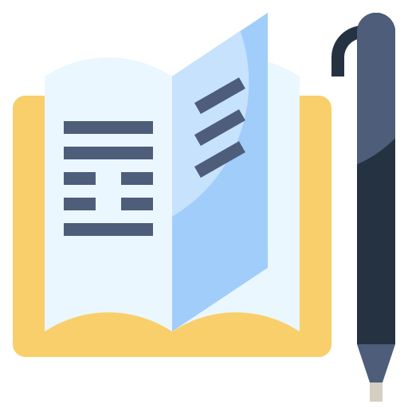
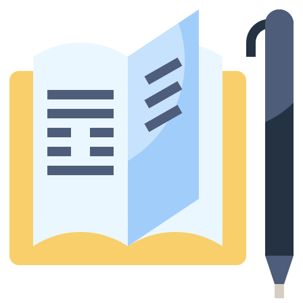

It’s really easy to start procrastinating when you’re at home instead of at your usual work or school setting. You have to force yourself to adapt your routine to a different environment or else the work will keep piling up :(
You can try some of these things to maintain productivity:
- Make a daily schedule
- Reward yourself with breaks
- Turn off your phone/close distracting tabs
- Listen to study music (ex: lofi hiphop beats)